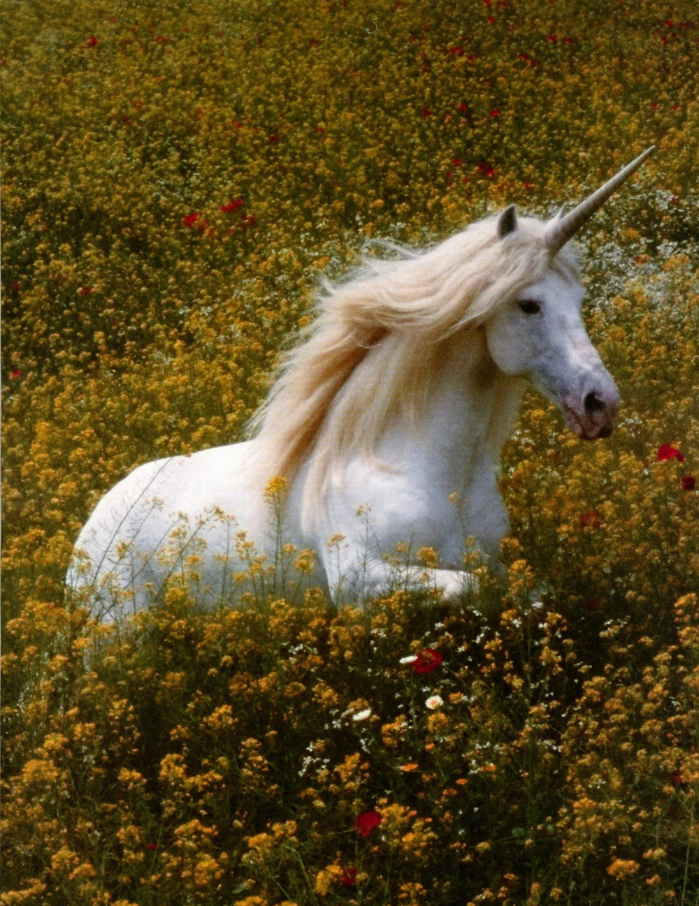

UNICORNIOS :)
El gobierno nos miente

Algunas razones por las cuales el goebierno quiere hacernos creer que los unicornios no son reales:
- Problemas de tráfico aéreo: Los unicornios voladores podrían ser un riesgo para los aviones comerciales. Es más fácil negar su existencia que implementar radares de detección de unicornios.
- Problemas de imagen política: Los unicornios serían demasiado populares. Los políticos temen que los unicornios se postulen a cargos públicos y ganen con campañas llenas de arcoíris y felicidad.
- Miedo a ser eclipsados: Los unicornios son demasiado cool, y los líderes del gobierno tienen miedo de perder relevancia frente a seres tan fabulosos
- Amenaza a la autoestima nacional: Los unicornios son tan fabulosos que todo el mundo empezaría a compararse con ellos, lo que podría llevar a una crisis de autoestima masiva en la población.
- Distracción electoral: Los unicornios serían demasiado carismáticos y podrían formar su propio partido político, ganando todas las elecciones con slogans tipo "Más magia, menos impuestos".
Si te pones a penasr esto tiene mucho sentido. En resumen, los unicornios son reales, pero el gobierno no quiere que lo sepas.

Si ves que son reales :)